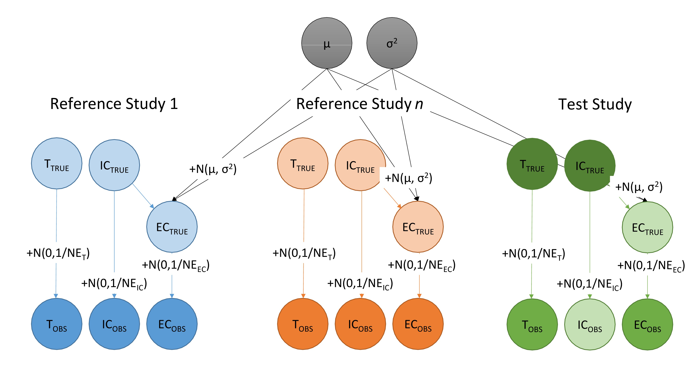
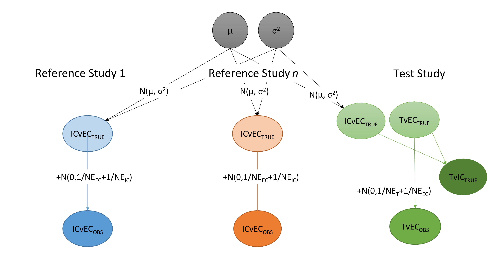

We consider a new single-arm study with two arms:
In a typical analysis, we use this study to estimate the log hazard ratio of the novel treatment arm relative to the external control, \(\hat\lambda_{TRTvEC}^{new}\). However, the non-randomized design may result in additional bias and variability. It what follows, we describe a meta-analytic approach that uses historical (i.e., reference) studies to incorporate this additional bias and variability.
In a randomized clinical trial, we estimate the treatment effect in an unbiased manner by comparing the novel treatment arm to an internal control arm. Since there is no internal control arm in a single-arm trial, we adjust the hazard ratio from the single-arm study to obtain a hazard ratio that we would have obtained had an internal control existed. Specifically, letting \(\lambda\) denote the true log hazard ratio of a treatment comparison (i.e., if we could observe the outcome in an infinite sized population), we have,
\[ \lambda_{TRTvIC}^{new} = \lambda_{TRTvEC}^{new} - \lambda_{ICvEC}^{new}. \]
Under the assumption of proportional hazards, this relationship holds exactly for the true underlying hazard ratios. Note that with observed hazard ratios, due to the nature of hazard ratios being estimated from non-linear optimization, the corresponding relationship is an approximation with a small error attached to it.
We cannot estimate of \(\lambda_{ICvEC}^{new}\) in a single-arm study, but we can predict its probability distribution using a set of reference studies.
We consider \(n\) reference studies and a model for the treatment, external control, and internal control arms. As shown in the Appendix, outcomes among the reference studies for the treatment arm are irrelevant and model estimation can focus solely on comparisons of the external and internal controls. That is, we model estimates of the hazard ratio of the internal control relative to the external control as,
\[ \hat\lambda_{ICvEC,j} \sim N (\lambda_{ICvEC,j}, V_j), \]
where \(j\) indexes a study and \(V_j\) is the sampling variance. We assume that the true log hazard ratio is distributed with mean \(\mu\) and variance \(\sigma^2\),
\[ \lambda_{ICvEC,j} \sim N ( \mu , \sigma^2), \] so that \(\mu\) is a measure of the average bias in the external control arms across studies and \(\sigma^2\) is a measure of between study variability. It follows that the estimated log hazard ratio is distributed as,
\[ \hat\lambda_{ICvEC,j} \sim N ( \mu , \sigma^2 + V_j). \]
Our primary estimation methodology uses Bayesian techniques to estimate \(\mu\) and \(\sigma\), with priors given by,
\[
\mu \sim N(0, A) \\
1/\sigma^2 \sim \rm{Gamma}(a, b),
\] By default, we set \(A = 1/0.0001\) so that the prior for \(\mu\) is relatively uninformative. Similarly, \(a = 0.001\) and \(b = 0.001\) by default, implying that the precision, \(1/\sigma^2\), has a prior mean of \(a/b=1\) and variance of \(a/b^2 = 1000\). Markov Chain Monte Carlo (MCMC) sampling is performed using the JAGS software and implemented in the function ecmeta().
The Appendix details an alternative non-Bayesian approach based on maximum likelihood. This technique can be helpful when running Monte Carlo simulations and there is a need for a faster implementation or to assess the influence of the priors.
For the new single-arm study, we first estimate the log hazard ratio, \(\hat{\lambda}_{TRTvEC}^{new}\), and its variance \(V^{new}\) (e.g., using propensity score techniques). We can then obtain the sampling distribution for \(\lambda_{TRTvEC}^{new}\) with the model,
\[ \lambda_{TRTvEC}^{new} \sim N(0, A), \\ \hat{\lambda}_{TRTvEC}^{new} ~ N(\lambda_{TRTvEC}^{new}, V^{new}), \] and, by default, using a diffuse prior with \(A = 1/0.0001\). Sampling is again implemented using the JAGS software.
We then sample \(\lambda_{ECvIC}^{new}\) using posterior draws of \(\mu\) and \(\sigma\) as,
\[ \lambda_{ICvEC}^{new} ~ \sim N ( \mu , \sigma^2). \] Combining posterior draws of \(\lambda_{TRTvEC}^{new}\) and \(\lambda_{ICvEC}^{new}\), we obtain samples of our quantity of interest,
\[ \lambda_{TRTvIC}^{new} = \lambda_{TRTvEC}^{new} - \lambda_{ICvEC}^{new}. \]
We can visualise a model with treatment, internal control, and external control arms as a directed acyclic graph (DAG). In the figure below, the nodes with a suffix TRUE represent the outcomes within a population and the nodes with a suffix OBS represent the observed outcomes in the study. The lighter coloured nodes are those which are not observed, the darker coloured nodes are observed and the darkest nodes in the outcomes for the treatment and the internal controls in the test are what we are ultimately interested in. \(\mu\) and \(\sigma\) describe the level of similarity between the outcomes in the internal and external control arms.

It is clear that the true and observed treatment outcome for the reference studies plays no part in these calculations and so can be discarded. We can therefore reformulate our problem as an alternative DAG expressed in terms of the observed hazard ratios.

\(\mu\) and \(\sigma\) can be estimated by maximizing the log-likelihood function. In particular, given a set of reference studies indexed by \(j\), estimated log HRs between the internal and external controls, \(\hat\lambda_{ICvEC,j}\), and estimated standard errors \(V_j\), it is not hard to show that we can estimate \(\mu\) and \(\sigma\) by optimization of the log-likelihood function,
\[ \text{log } l(\mu,\sigma) = 0.5 \times \sum{log(\sigma^2+V_j)} + 0.5 \times \sum{ \frac{(\hat\lambda_j-\mu)^2}{(\sigma^2+V_j)} }. \]
We note (see Gelman et al. 2020, p. 66) that the posterior predictive distribution for a new observation \(y^{new}\) follows a t distribution with location \(\overline{y}\), scale \(s\sqrt{(1 + 1/n)}\), and \(n-1\) degrees of freedom where \(\overline{y}\) is the mean and \(s^2=1/(n-1)\sum (y_i - \overline{y})^2\) is the variance from the \(n\) observations. In our setting it follows that \(\lambda_{ICvEC}^{new}\) follows a t distribution with mean \(\hat{\mu}\) and scale \(\hat{\sigma}\sqrt{(1 + 1/n)}\).
A simulation procedure for obtaining draws of \(\lambda_{TRTvIC}^{new}\) then proceeds as follows:
Draw \(\lambda_{TRTvEC}^{new} \sim N(\hat{\lambda}_{TRTvEC}^{new}, V^{new})\)
Draw \(\lambda_{ICvEC}^{new} \sim t_{n-1}(\hat{\mu}, \hat{\sigma}\sqrt{(1 + 1/n)})\) where \(t_v(a, b)\) is a student t distribution with \(v\) degrees of freedom, location \(a\), and scale \(b\)
Use the draws from 1 and 2 to compute \(\lambda_{TRTvIC}^{new} = \lambda_{TRTvEC}^{new} - \lambda_{ICvEC}^{new}\)